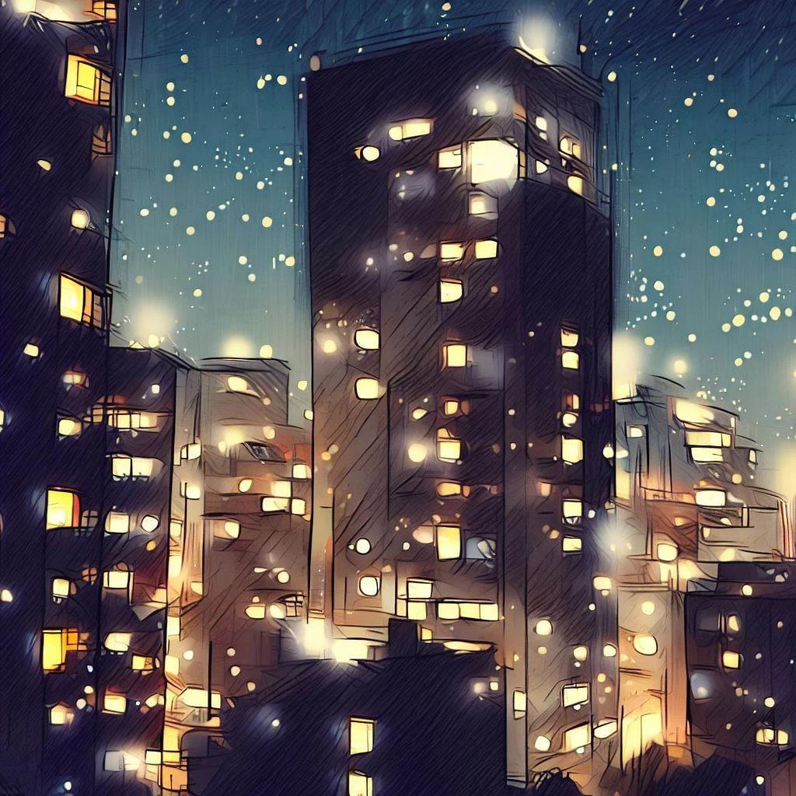
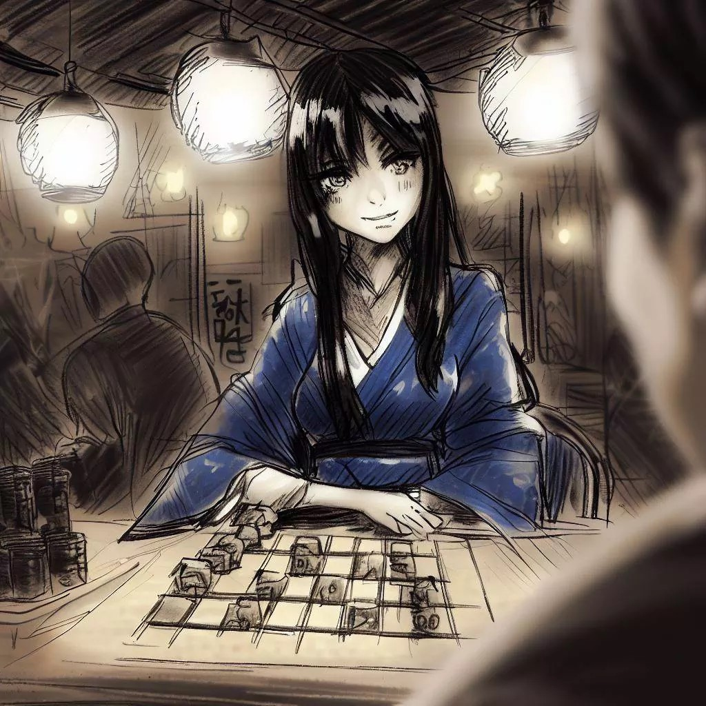
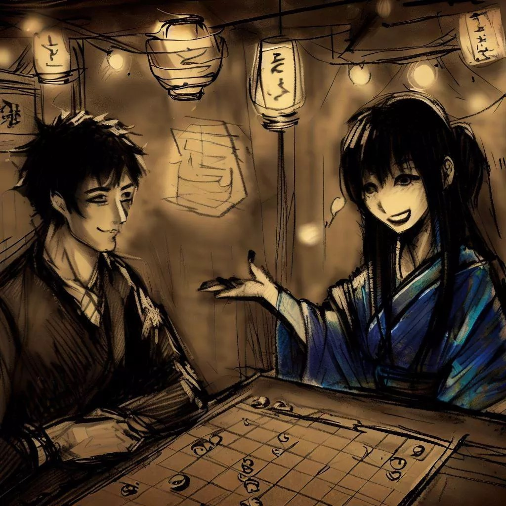
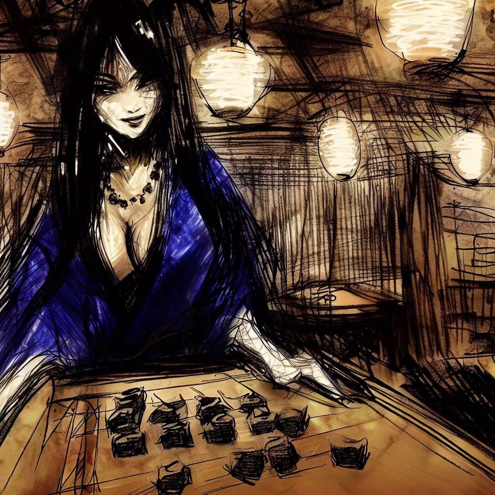
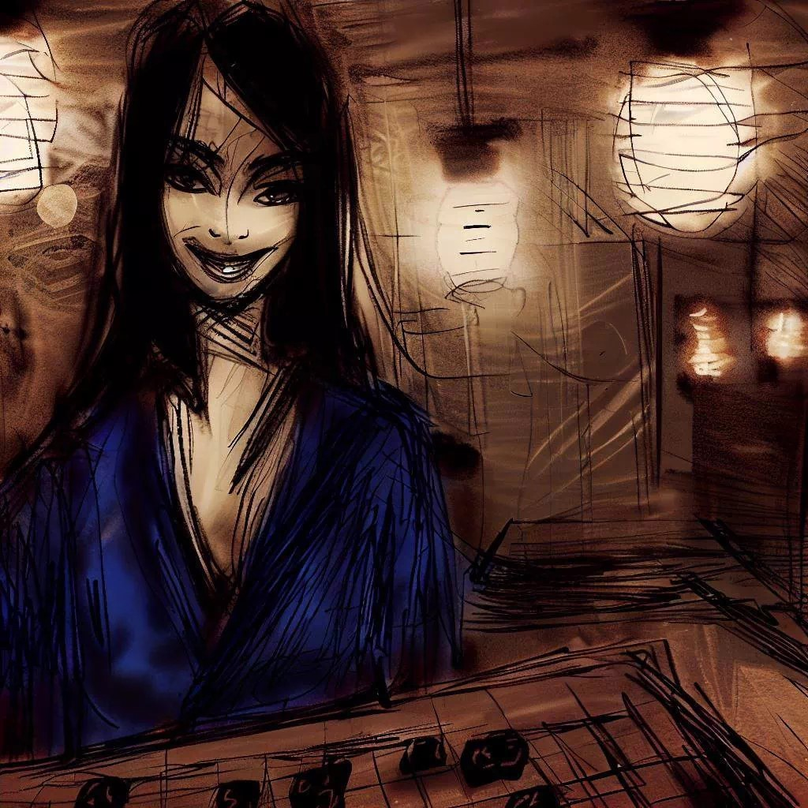
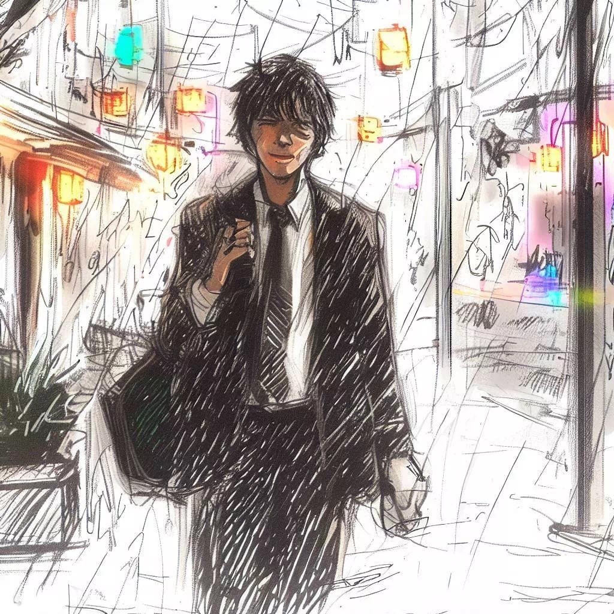

Rencontre au Bar de la Régence

Épigraphe
Le plus grand échec n'est pas de perdre la partie, mais de sourire sans savoir que les jeux sont faits.
Introduction
On raconte qu'au Japon, dans la région du Kansai, lorsque la pleine lune brille haut dans le ciel, une créature aux charmes ensorcelants fait son apparition, cherchant à attirer les passants égarés.
Belle et mystérieuse, Komayō séduit les infortunés avec son attrait irrésistible en leur suggérant de manière perfide une partie de ōgi, une variante du traditionnel jeu d'échecs japonais. Ceux qui acceptent son invitation se retrouvent emportés dans un labyrinthe insaisissable de manœuvres et de stratégies.
Toutefois, à mesure que le jeu progresse, une lassitude insidieuse s'empare des joueurs, brouillant leur jugement et infiltrant leurs os, les conduisant inévitablement vers un sommeil aussi profond qu'immuable.
C'est durant ce repos abyssal que Komayō dévoile sa véritable nature. Elle s'empare de leur énergie vitale, ne laissant derrière elle que l'écho vide de leur ancienne vigueur. Les âmes de ces victimes malheureuses se voient alors transformées en yūrei, et condamnées à une errance sans fin. Hantées par le souvenir envoûtant de Komayō et tourmentées par l'espoir vain de terminer leur partie de ōgi, elles errent éternellement, prisonnières d'une quête inachevée et d'un rêve déchu.

Ce livre est le témoignage poignant de l'une d'entre elles.
Préface
Je tiens à exprimer ma profonde gratitude envers Komayō, qui m'a initié au jeu fascinant de l'ōgi. Sa présence mystérieuse a laissé une trace indélébile dans mon existence. Ce que je m'apprête à raconter est l'histoire de notre première rencontre, un souvenir que je garde précieusement. À travers ces lignes, je souhaite partager avec vous l'événement de cette nuit mémorable, où une simple partie de jeu s'est muée en une quête de découverte et d'éveil spirituel.
Prologue

Dans l'obscurité réconfortante de mon bureau, le tic-tac de l'horloge semblait arrêter le temps. Je me trouvais dans un état second, physiquement présent mais mentalement ailleurs, une ombre parmi d'autres, un spectre dans le mécanisme impersonnel de l'entreprise. Mes collègues, réduits à de lointaines silhouettes, s'affairaient dans une agitation vide de sens.
Mes yeux, absorbés par l'abîme de l'écran d'ordinateur, réfléchissaient une salle virtuelle habitée de fantômes. Dans ce théâtre numérique surréaliste, chaque mot et chaque geste paraissaient inéluctablement déterminés. Nous étions des acteurs malgré nous, jouant un scénario usé, où l'authenticité avait cédé la place à une danse mécanique de formalités.
Soudain, un frisson inattendu traversa mon être. Un murmure dans l'air, un écho d'une promesse lointaine, éveilla en moi un désir de briser les chaînes de la monotonie et de m'évader de cette toile d'araignée de faux-semblants.
Comme si une fissure s'était ouverte dans le voile de la réalité, un passage secret vers un ailleurs, un souffle de liberté dans l'air stagnant du bureau. La mélodie de fin de journée, habituellement ignorée, résonna cette fois avec une clarté surprenante, me tirant de ma léthargie.
Avec un élan soudain de rébellion, je me suis déconnecté de la réunion.
Mon reflet dans l'écran éteint reflétait un homme surpris, presque étranger à lui-même.
Je vous laisse terminer,
déclarai-je, rompant le silence oppressant.
Autour de moi, les visages se tournèrent, empreints de surprise et de curiosité.
Je me suis levé, me libérant de l'emprise de la routine quotidienne, traversant le bureau comme si j'étais dans un rêve éveillé. Chaque pas résonnait comme un adieu à l'ancienne version de moi-même, à l'homme autrefois emprisonné dans une cage dorée de conformité. Pour la première fois depuis longtemps, je me sentais léger, vibrant d'excitation face à l'inconnu qui m'attendait au-delà de ces murs.

Lueur Nocturne à Tenjinbashi
Il est un peu plus de 19 heures lorsque je quitte mon bureau dans le quartier administratif d'Umeda. Dehors, l'air frais de décembre m'accueille, une fraîcheur surprenante mais agréable. La nuit enveloppe la ville, mais une Lune brillante et pleine éclaire mon chemin, se frayant un passage entre les gratte-ciels.

Avec chaque pas, je sens la léthargie de la journée s'évaporer de mon corps. J'essaie de vider mon esprit, me concentrant sur l'instant présent. Le parc Ōgimachi se déploie devant moi, un havre de paix au cœur de l'agitation urbaine. Les arbres nus se découpent en silhouettes sombres contre un ciel baigné de lumière lunaire, leurs branches ondulant doucement dans la brise nocturne.
En me dirigeant vers la rue commerçante Tenjinbashi, je sens mon esprit s'apaiser davantage. L'atmosphère des galeries, avec leurs pachinkos étincelants, leurs salles d'arcade bourdonnantes, leurs restaurants conviviaux et leurs boutiques éclectiques, m'insuffle un regain d'énergie. Ce mélange de lumières, de sons et d'activité humaine a quelque chose de vivifiant.
Je ralentis naturellement, captivé par l'effervescence qui m'entoure. C'est alors que j'arrive devant le Bar de la Régence. Ce lieu, à la fois familier et mystérieux, est mon refuge hebdomadaire. Ici, parmi les amateurs d'échecs, je trouve un plaisir simple mais intense, un contraste saisissant avec la complexité de ma vie quotidienne.
Du Comptoir au Jeu
Dès mon entrée dans le Bar de la Régence, l'odeur réconfortante du vieux bois m'enveloppe, tandis que la lumière douce et tamisée me baigne. Le son familier des pièces d'échecs cliquetant sur les échiquiers résonne dans l'air, éveillant en moi un sentiment profond de bien-être.

Je me fraye un chemin à travers la salle, où des joueurs d'échecs s'affrontent dans des duels silencieux.
Assis au comptoir, je fais un signe discret au barman, un connaisseur de mes habitudes.
Mais mon esprit est déjà ailleurs, sur le champ de bataille échiquéen.
Ce soir,
me dis-je,
je vais jouer avec la passion et l'audace d'Adolf Anderssen. Un jeu offensif, riche en combinaisons brillantes, où chaque sacrifice de pièce est un pas de plus vers la victoire. Un véritable spectacle d'ingéniosité et de courage.
Cependant, ma concentration est soudain interrompue par une présence à mes côtés. Une jeune femme d'une beauté saisissante savoure un verre de vin. Son kimono bleu profond, en parfaite harmonie avec sa peau claire, et ses cheveux noirs ondulant en cascades soyeuses, captent la lumière tamisée, créant un contraste envoûtant.
Lorsqu'elle tourne la tête vers moi, son sourire énigmatique me désarme complètement. Ses yeux, scintillant d'un éclat malicieux, captent toute mon attention, faisant vaciller ma confiance. L'assurance que je ressentais pour ma prochaine partie d'échecs s'évanouit, remplacée par une intrigue et une fascination soudaines.
Notre jeu de regards s'intensifie, un dialogue silencieux s'instaurant entre nous. Je m'efforce de ne pas laisser transparaître mes émotions et, dans un geste élégant, je lève mon verre en sa direction. Elle répond avec un calme et une douceur qui me surprennent, et nous engageons la conversation.
Elle allie raffinement et accessibilité, sa conversation oscillant entre assurance et charme. Il se dégage d'elle une naïveté subtile, qui ne fait qu'accentuer son attrait. Je suis généralement un homme de caractère, franc et direct, mais face à elle, une nouvelle facette de ma personnalité semble s'éveiller, marquée par une fascination inédite.
Sur un coup de tête, je propose à la jeune inconnue une partie d'échecs.
Elle semble un peu hésitante et, avec un sourire timide, décline ma proposition.
Je ne joue qu'au shōgi,
murmure-t-elle, une lueur amusée dans ses yeux légèrement voilés par l'alcool.
J'ai presque cru que j'étais dans un bar à shōgi. Ce serait drôle de voir mes pièces de shōgi sur un échiquier, n'est-ce pas ?
Son rire, un peu trop fort, révèle son état, mais elle reste réservée.
Avec bienveillance, je réponds en souriant, cherchant à la mettre à l'aise.
Cela aurait été une scène intéressante, certainement,
dis-je doucement.
Peut-être que les pièces de shōgi se débrouilleraient bien sur un échiquier d'échecs. Un mélange de stratégies pourrait être une expérience surprenante.
Elle me lance un regard reconnaissant pour ma compréhension.
Vous pensez vraiment ? Ce serait certainement un spectacle amusant !
dit-elle, son rire s'adoucissant.
Puis, s'animant d'une soudaine audace, elle se lève et m'invite à la suivre vers une table de jeu. Légèrement surpris par cette invitation impromptue, je me lève et la suis, mû par un sentiment de bienveillance et de curiosité, prêt à explorer cette partie atypique.
Le Jeu des Contrastes
Nous prenons place à une table discrète, ornée d'un échiquier et de sa boîte de pièces. La jeune femme, dans un geste fluide et élégant, repousse ses longs cheveux, libérant un parfum doux et captivant. Son parfum est un mélange délicat, rappelant à la fois la fraîcheur d'une brise nocturne et la tendre fragrance d'un jardin de roses.
Elle glisse sa main dans son kimono et en extrait avec précaution un petit sachet en tissu. Avec une grâce naturelle, elle renverse doucement son contenu sur la table, révélant une série de pièces de shōgi en bois, aux formes légèrement trapézoïdales et gravées de kanji, qu'elle dispose sur son côté de l'échiquier.
Je suis fasciné, réalisant qu'elle envisage de me défier aux échecs avec ces pièces de shōgi. Cette fusion inattendue de deux jeux traditionnels est à la fois surprenante et captivante.
Avec un sourire malicieux, elle me demande :
Voulez-vous commencer avec les blancs ?
Son visage s'illumine d'une lueur espiègle et invitante.

Avec un sentiment de gratitude renouvelée, je commence à disposer mes pièces blanches sur l'échiquier. Chaque mouvement est exécuté avec une attention méticuleuse, révélant une concentration profonde. Je commence par positionner mes pièces clés – mon roi et ma reine – avec un soin particulier, puis je m'attèle à placer méthodiquement mes pions. Cette manière de disposer mes pièces est pour moi un rituel, exécuté avec une précision révélatrice de mon respect pour le jeu.
Du coin de l'œil, je l'observe placer ses pièces de shōgi avec la même attention.
Elle commence par une lance dans chaque coin, suivie par un cavalier et un général d'argent.
Ensuite, elle prend une pièce marquée du caractère pour princesse et la place délicatement en d8, à côté de son roi.
Le fou trouve sa place en g7, la tour en b7, et elle termine en alignant ses huit pions sur la troisième rangée.
Il y a quelque chose de captivant dans la manière dont elle manipule ses pièces. Elle les fait tourner entre ses doigts agiles avant de les poser sur le plateau, chaque mouvement produisant un son sec et net qui résonne discrètement dans l'air.
Les pièces sont à présent disposées sur l'échiquier, créant un tableau à la fois familier et insolite. J'examine attentivement l'agencement, essayant de deviner les premiers coups possibles. En tant que joueur expérimenté de shōgi, je trouve cette variante particulièrement nouvelle et captivante. Pour dissiper mes doutes, je décide de poser quelques questions.
Puis-je savoir contre quelle variante j'ai l'honneur de jouer ?
demandé-je, un sourire courtois trahissant ma curiosité.
Elle incline légèrement la tête, un éclat malicieux illuminant ses yeux.
Votre jeu est bien le roi des jeux, n'est-ce pas ?
demande-t-elle, une pointe de rhétorique dans sa voix.
Puis, un sourire en coin se dessinant sur ses lèvres, elle ajoute d'une voix douce et captivante :
Celui-ci, c'est le jeu des rois, aussi connu sous le nom de ōgi.
La subtilité et la profondeur de sa voix enveloppent ses mots, les drapant d'un voile de mystère et de charme séducteur.
En parlant de roi, je vois que le vôtre est bien accompagné. Pourriez-vous me parler de cette pièce, à ses côtés ?
demandé-je, pointant du doigt.
Elle me répond avec un sourire énigmatique.
C'est la Princesse, un mélange fascinant du fou et du cavalier de vos échecs. Et, une fois promue, les déplacements du roi lui sont ajoutés.
Je hoche la tête, impressionné par la finesse de cette fusion.
Et concernant les pièces capturées, peut-on les réintégrer au jeu, comme au shōgi ?
Absolument,
confirme-t-elle, sa voix empreinte de confiance.
Les règles du shōgi restent en vigueur.
Une dernière question me traverse l'esprit.
Mais ne risque-t-on pas un déséquilibre dans la partie, si mes pièces les plus puissantes se retournent contre moi ?
Elle secoue la tête, ses cheveux noirs ondulant au rythme de son mouvement.
Non, car chaque pièce capturée reprend sa forme initiale avant d'être transformée en pièce de ōgi. C'est un équilibre subtil.
Je fronce légèrement les sourcils, trahi par mon intrigue.
Je ne suis pas tout à fait sûr de comprendre. Par exemple, si vous capturez une de mes tours...
Votre tour capturée redeviendrait un simple pion, avant d'être convertie en pièce de ōgi et ajoutée à mon jeu,
elle explique patiemment, sa voix emplie de clarté.
Je reste pensif un moment.
Mais pourquoi une tour devrait-elle redevenir un pion ?
Elle me regarde avec complicité, un sourire éclairant son visage, signe d'une compréhension partagée.
Tout comme un pion, lorsqu'il est promu aux échecs, peut se transformer en dame, en tour, en fou ou en cavalier, lorsqu'il est capturé, il retourne à sa forme originelle,
explique-t-elle, ses mots flottant dans l'air entre nous comme une énigme délicieuse.

Sa réponse ouvre une nouvelle dimension dans notre partie, aiguisant davantage mon intérêt. Ce mélange de complexité et de créativité promet une expérience fascinante. Sa façon d'expliquer, mêlant espièglerie et précision, donne à ce défi unique un attrait tout particulier.
Le Jeu de la Nuit
Dans ce moment de calme précédant la tempête du jeu, je me concentre profondément.
Je sens en moi une sérénité qui transcende le simple acte de jouer.
J'ouvre la partie en avançant mon pion roi en e4.
Ce geste n'est pas seulement stratégique ; il est une invitation à un jeu dynamique, un appel à la danse tactique et spectaculaire des pièces d'échecs.
Je lève les yeux vers ma jeune adversaire, capturant son regard. Dans ses yeux, je cherche à déchiffrer les subtilités de sa stratégie, à percer les pensées cachées derrière son visage impassible. C'est un instant de connexion muette, où chaque battement de cœur semble en harmonie avec les mouvements sur l'échiquier.
Elle répond par un mouvement symétrique, avançant son pion en e5, en parfaite résonance avec mon ouverture.
L'excitation monte en moi, une anticipation tangible s'empare de mon esprit.
Le jeu s'anime, chaque coup ouvrant la voie à de nouvelles possibilités, à de nouveaux chemins à explorer.
Dans cette ouverture, je ressens quelque chose de plus significatif que le jeu d'échecs lui-même. Chaque coup, chaque décision, se transforme en un acte de méditation, une quête vers une compréhension plus profonde. Il me semble que, à travers ce jeu, je touche à une essence fondamentale, à une vérité qui dépasse les pièces et l'échiquier, une vérité qui réside dans l'harmonie du mouvement et de la pensée.

Dans cet état méditatif, je me tourne intérieurement vers Caïssa, la déesse des échecs, cherchant sa sagesse et sa guidance. Elle devient une présence silencieuse à mes côtés, incarnant la beauté et l'élégance inhérentes à chaque partie d'échecs. Au fur et à mesure que le jeu avance, je sens que chacun de mes mouvements devient un hommage à son essence, une danse avec la divinité elle-même.
La partie atteint son apogée. Chaque coup devient plus réfléchi, imprégné d'une signification profonde qui transcende la stratégie pure. Une connexion croissante avec chaque pièce, chaque case de l'échiquier, se fait sentir, comme si elles appartenaient à un univers plus vaste où j'ai ma place. Caïssa, avec sa grâce intemporelle, semble guider mes mains, influençant chaque choix, chaque manœuvre.
Alors, dans un mouvement presque inconscient, je me penche doucement vers l'échiquier. Ma tête repose délicatement sur le bois lisse, mes yeux se ferment lentement. Un moment remarquable se produit : une paix profonde m'envahit, une sérénité qui transcende toute compréhension. C'est comme si tous les conflits, toutes les quêtes de la vie, trouvaient leur réponse dans ce contact simple entre mon front et l'échiquier.
Je prends conscience que ce n'est pas qu'un jeu, mais un reflet de la vie elle-même, avec ses défis et ses surprises. En posant ma tête sur l'échiquier, je m'abandonne à cette illumination. Je me sens en harmonie avec tout, dans un état d'éveil spirituel. C'est un moment de pure conscience, de beauté inégalée, où je touche à l'essence même de l'existence.

Les Échos de l'Aube
Le temps semblait s'être dissous, emporté par les ombres enveloppant ma conscience. Je flottais dans un voile doux et silencieux, mon esprit luttant pour remonter à la surface de la réalité.

Tel un navire émergeant de l'obscurité, je retrouve enfin le chemin vers la lumière naissante du matin. Mes yeux s'ouvrent lentement sur une pièce baignée dans la lumière douce de l'aube. L'échiquier, immobile, demeure le témoin silencieux de notre duel nocturne. Le siège de mon adversaire est vide, son aura mystérieuse s'étant évanouie avec l'arrivée du jour, tout comme ses pièces de ōgi.
Son absence laisse un vide insondable, alourdissant l'atmosphère, rendant la pièce étrangement silencieuse. Mon regard est capturé par une feuille de papier soigneusement pliée près de l'échiquier. Avec un sentiment de révérence, je la saisis.
Sur le papier, un simple mot, Merci
, suivi d'un prénom – Komayō
.
La signature est élégante, un souvenir fugace mais marquant de cette rencontre éphémère au Bar de la Régence, une nuit passée à jouer aux échecs avec l'énigmatique et fascinante Komayō.

Départ Silencieux
L'aube commence à peindre le ciel d'un bleu pâle, formant un contraste saisissant avec le velours noir de la nuit écoulée. La lune, jadis un phare solitaire et mystérieux, s'estompe doucement, son éclat s'éclipsant sous la lumière croissante du jour.
Ōsaka, encore engourdie de sommeil, m'accueille dans son silence apaisant alors que je quitte le bar. Les rues, habituellement vibrantes de vie, sont étonnamment calmes, leurs habitants nocturnes cédant la place à la sérénité de l'aube. Les lumières artificielles de la nuit s'éteignent progressivement, laissant la place aux douces teintes du lever du soleil. Seuls quelques signes de vie, tels le balai rythmé d'un balayeur ou le grondement lointain d'un camion de livraison, rompent cette quiétude matinale.
Les souvenirs de la nuit, des rires et des secrets partagés autour de l'échiquier, résonnent en moi comme un écho doux-amer. Je me sens transformé, marqué par une expérience que je peine encore à saisir pleinement. Le monde autour de moi semble à la fois familier et étrangement nouveau, comme si j'avais entrebâillé le voile de la réalité.
La brise matinale, qui caressait autrefois ma peau, me rappelle la présence éphémère de Komayō. Le goût du saké persiste, se mélangeant aux souvenirs de la nuit – les arômes complexes du jeu, la chaleur des échanges, l'épice de l'inconnu.
Errant dans les rues désertées, je ressens un mélange de mélancolie et d'espoir indéfinissable. Un chapitre de ma vie s'est clos sans que je ne m'en rende compte, et un autre, inexploré, commence à se dessiner. Imprégné du souvenir de Komayō et de notre partie d'échecs inachevée, je suis inconscient du fait que j'ai franchi une ligne invisible, succombé à la tentation. Un sentiment doux-amer se mêle à mon désir de la revoir. Au cœur de la nuit, je crois simplement rentrer chez moi, ignorant que j'ai entamé un voyage bien plus profond, une quête intangible pour retrouver Komayō, terminer notre duel, et peut-être, découvrir une forme inattendue de rédemption.
